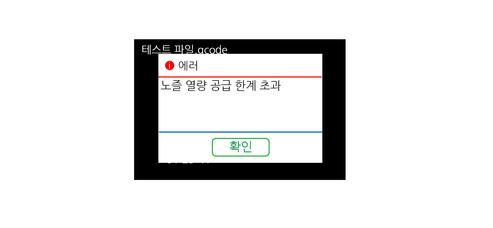

에러 종류
열량 공급 한계 초과(Thermal runaway)
{kind=link}
열량 공급 한계 초과는 온도를 유지하기 위해 공급되는 열량이 정해진 한도를 초과할 경우 나타나는 에러입니다. 크리메이커 M V2 의 경우 노즐 열량 공급 한계 초과, 베드 열량 공급 한계 초과 두 가지 경우가 있습니다. 원인이 되는 증상으로는 여러가지가 있고, 다음과 같습니다.
{kind=link}
1. 온도센서 손상
2. 온도센서 배선 이상
3. 온도센서 빠짐
4. 열선 손상
5. 열선 배선 이상
6. 파워 배선 이상
7. 실내 온도가 낮은 출력 환경
8. 높은 냉각팬 속도
출력 환경의 온도가 낮지 않다면, 각 온도센서가 빠져있지 않는지 먼저 확인해 볼 필요가 있습니다. 빠져있다면, 끼워줍니다. 확인을 해도 이상이 없거나 계속해서 같은 증상이 반복된다면, Cura 프로그램에서 냉각팬 속도를 낮출 필요가 있습니다. 또한 배선을 전체적으로 점검해 보아야 합니다.
가열 불가(Heating Failed)
가열 불가도 마찬가지로 온도와 관련된 에러입니다. 노즐 가열 불가, 베드 가열 불가가 있습니다. 예열을 함에 있어서, 정해진 시간보다 더 오랫동안 가열을 했음에도 불구하고, 목표 온도에 도달하지 못한 경우 3D 프린터가 안전상의 이유로 프린터를 정지하고, 에러를 띄웁니다. 가열 불가에 대한 에러도 마찬가지로 여러 가지 원인이 있습니다.
1. 온도센서 손상
2. 온도센서 배선 이상
3. 온도센서 빠짐
4. 열선 손상
5. 열선 배선 이상
6. 파워 배선 이상
대부분 열량 공급 한계 초과의 원인과 유사합니다. 만일 에러가 나타난다면, 열량 공급 한계 초과와 가열 불가 에러가 번갈아가며 나타날 가능성이 높습니다.
최대 온도 초과 & 최소 온도 이하
현재의 노즐, 베드 온도가 정해진 온도보다 더 많이 가열되는 경우에 최대 온도 초과 에러를 띄웁니다. 또한 너무 실내 온도가 낮은 경우 최소 온도 이하 에러를 띄웁니다. 해당 온도나 환경에서는 출력이 원만하게 되지 않습니다.
최대 온도 초과
1. 메인보드의 모스펫 부품이 고장 나서 설정온도 이상으로 계속해서 가열될 경우
2. 온도센서가 빠져있다가 끼워지면서 온도가 급격히 올라가는 경우
최대 온도를 초과하는 경우는 예열 버튼을 누르지 않았는데도 가열된다던가, 보드의 이상으로 온도가 계속 올라갈 수 있습니다. 이런 경우에는 메인 보드를 AS 요청을 해야 합니다. 또한 온도센서가 빠져 있는 상태에서 가열되면 실제 온도보다 낮게 온도센서가 온도를 감지합니다. 이때 온도센서를 제대로 부착하면 온도가 올라가서 최대 온도를 넘길 수 있습니다.
최소 온도 이하
1. 온도센서가 고장 난 경우
2. 겨울철 발코니나 실외와 유사한 환경에 3D 프린터가 있는 경우
온도센서가 고장 난 경우에 3D 프린터는 온도값을 -25, -17 … 과 같이 영하의 온도가 측정되는 것처럼 보입니다. 이때는 최소 온도 이하라는 에러가 나타날 수 있습니다. 또한 온도센서가 고장 난 경우가 아니라도, 3D 프린터가 있는 장소의 온도가 너무 낮아서 출력을 못하는 경우에도 에러가 나타날 수 있습니다.
원점 이동 실패, 재부팅 필요
원점 이동 실패는 크리메이커 M V2 에서는 Z축과 연관되어 있을 가능성이 높습니다. 원점 이동 기능을 눌렀는데, Z축 감지가 안되거나, Z축에 과한 힘이 감지된 경우에 에러를 띄우게 됩니다.
{kind=link}
1. Z 축이 원점 이동 중 과한 힘이 감지될 경우
2. 오토레벨링 센서가 정상 범위보다 위에 고정되어 있는 경우
3. 온도를 올리지 않는 상태에서 원점 이동이 진행된 경우
원점 이동 중 베드에 물건이 있거나, 경로에 이물질이 있어서 제대로 내려가지 않는 경우에 Z축에 과도한 힘이 감지됩니다. 이때 원점 이동 실패 에러를 띄웁니다. 따라서 출력전 베드 위에 물건이나 출력물이 있는지 점검합니다.
{kind=link}
또한 오토레벨링 센서가 그림과 같이 너무 위에서 고정되어 있으면, 센서의 감지 범위에 베드가 닿지 못하므로 다른 부분이 정상적으로 작동하더라도 센서가 감지되지 않기 때문에 Z 원점 이동 중에는 계속 아래로 내려갑니다. 이때 손상을 방지하기 위해 원점 이동 실패 에러를 띄웁니다.
간혹 비슷한 원인으로 노즐 끝부분에 필라멘트가 굳어 있으면, 굳은 필라멘트 때문에 센서 감지가 되지 않아 원점 이동 실패를 띄웁니다. 예열을 하면, 필라멘트가 있더라도 녹기 때문에 센서의 감지 범위까지 내려갈 수 있습니다. 이런 경우에는 원점이동을 해주면 됩니다.